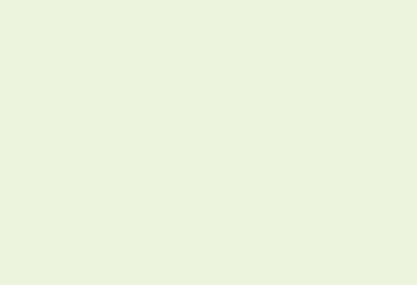

Історичні населені місця
Питома вага історичних населених місць у загальній кількості міст та селищ міського типу
(%, в розрізі регіонів)
|  | до 25 |
| 25-50 | |
| 51-75 | |
| 76-100 |
Кількість історичних населених місць
(одиниць, в розрізі регіонів)
| до 10 | |
| 10 - 20 | |
| 21 - 30 | |
 | понад 30 |
Період заснування або першої писемної згадки історичних населених місць
(перша історична згадка про поселення)
| до X ст. | |
| Х ст. | |
| Х-ХІІІ ст. | |
| ХІV-XV ст. | |
| XVI-XVIII ст. | |
| ХІХ ст. | |
| ХХ ст. |